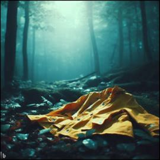
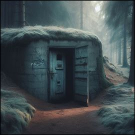
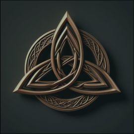

Categoria
Presentació
Links
Entra en las entrañas del bosque
y descubre todos los secretos de Dark:
CATEGORÍA

Aunque quizás necesites un poco de
contexto antes... todo está en el bunker:
PRESENTACIÓ

Y ojo que todo ésto no nos lo
inventamos nosotros... fuentes aquí.
LINKS
